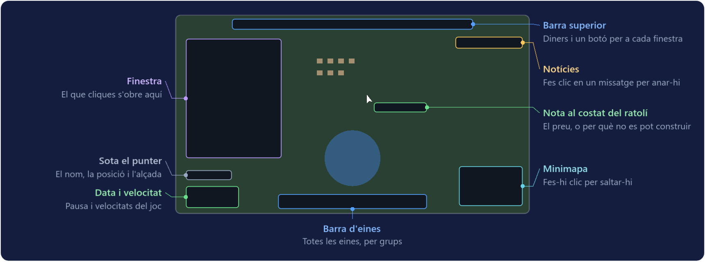

La pantalla
Les barres, les finestres i la nota al costat del ratolí.
Tot és a l'abast en tres llocs: la barra superior, la barra d'eines de baix i la nota que segueix el ratolí.


| On | Què fa |
|---|---|
| Barra superior | Els teus diners (fes-hi clic per obrir Finances) i un botó per a cada finestra. |
| Data i velocitat | La data, a la cantonada inferior esquerra, amb la pausa i les velocitats del joc. |
| Barra d'eines | Inspecciona, Carreteres, Ferrocarril, Ports, Terreny, Enderroca, Desfés i Vehicle. En triar un grup s'obre una fila amb les seves eines damunt de la barra. |
| Minimapa | El món sencer a la cantonada. Fes-hi clic per saltar a aquell punt. |
| Notícies | Els missatges sobre la teva empresa apareixen a mesura que passen les coses. Fes clic en un per anar al lloc de què parla; les notícies d'objectius, subvencions i peticions obren Objectius. La finestra de Notícies els guarda, i a Totes les notícies també hi veuràs què fan els rivals i altres ciutats. |
La nota al costat del ratolí
- Abans de construir mostra el preu d'una casella de carretera, via, catenària o pont.
- Mentre arrossegues mostra el preu total i el que estàs construint, en verd.
- Quan una cosa no es pot construir es posa en vermell i diu per què: un edifici al mig, terreny massa costerut, falta de diners o un ajuntament que diu que no.
Mirar les coses
- Amb Inspecciona (1), fes clic en un vehicle, una estació, una indústria o un edifici per obrir-ne la finestra. Assenyala qualsevol cosa per saber què és.
- Amb Inspecciona, deixa el punter un moment sobre una estació, el nom d'una ciutat, una indústria, un vehicle o un edifici i al costat apareix una fitxa amb les xifres clau: la càrrega en espera i les valoracions, la població i què en pensa l'ajuntament de tu, què ha produït una indústria i quant se n'ha transportat, la càrrega i el benefici d'un vehicle. A Configuració pots desactivar les fitxes.
- Amb una eina de construcció a la mà, la cantonada inferior esquerra diu què hi ha sota el punter, amb les coordenades i l'alçada.
- Aquesta finestra es queda a l'esquerra. En fer clic en una altra cosa se substitueix, i una fletxa a la barra de títol torna al que estaves mirant.
- Les pantalles com Vehicles, Finances o aquesta guia s'obren d'una en una: la nova substitueix l'anterior, i tornar a prémer la seva tecla o el seu botó la tanca.
- Prem la xinxeta d'una finestra per mantenir-la oberta obris el que obris. A Configuració hi ha un interruptor perquè totes les finestres es quedin obertes.
- Les ciutats i les indústries porten petites icones de càrrega: buides per al que necessiten, plenes per al que produeixen.
- Arrossega una finestra per la barra de títol. Esc tanca la que hi ha al damunt.
Llistes del que tens
- Vehicles (V) mostra la teva flota amb el benefici de cada vehicle. Ordena-la per Requereix atenció per veure primer els que tenen problemes.
- Estacions (Ctrl+S) mostra totes les estacions amb el que hi espera i les seves valoracions.
- Línies (Ctrl+L) mostra les teves línies amb les parades, els vehicles i el benefici. Mira Línies.
- Problemes (I, el senyal d'avís, amb un número) enumera tot el que està encallat o va malament, cada cosa amb el perquè i un botó que ho arregla o t'hi porta.
- En aquestes llistes, fes clic en una fila per obrir-la, o en el seu botó de diana per veure-la al mapa. A Problemes, un clic en una fila mostra el lloc i el botó del costat ho arregla.
- Objectius (J, la bandera) reuneix els teus primers passos, els teus assoliments, com de prop és l'objectiu de la teva empresa i les subvencions i peticions de les ciutats en oferta. Consulta Objectius i assoliments.
Desar
- F5 desa a l'instant i F9 torna a carregar aquesta partida.
- El menú del joc (Esc) desa amb el nom que triïs i carrega qualsevol partida desada.
- El joc també desa tot sol, cada tres mesos si no ho canvies a Configuració.
Totes les dreceres són a Controls.